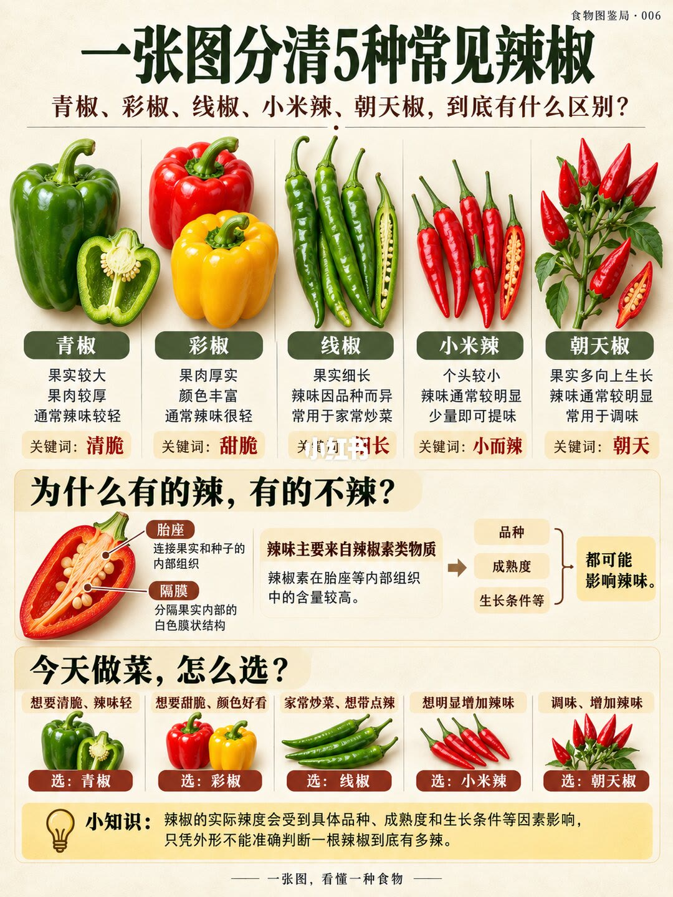

1/1
五种辣椒：外形先分开，辣度留作通常

图题是「一张图分清 5 种常见辣椒」，角落标着食物图鉴局 · 006。上排从左到右：青椒个头大、果肉厚，通常辣味比较轻，关键词清脆，画面有整果和横切。彩椒肉厚、颜色鲜艳（图上是红的和黄的），通常辣味很轻，关键词甜脆。线椒又细又长，辣度因品种而异，家常炒菜常见，关键词细长，其中一根被纵切开。小米辣个头小，辣味通常比较明显，少量就能提味，关键词小而辣。朝天椒的特点写成果实多向上生长，通常较辣，常用于调味，关键词朝天，画面是一簇朝上的红果加一个切面。
中段问「为什么有的辣，有的不辣」。横切示意图标出胎座（连接果实和种子的内部组织）和隔膜（把内部隔开的白色膜）。正文和图都写：辣味主要来自辣椒素类物质，在胎座等内部组织里含量较高。旁边三条因素是品种、成熟度、生长条件，都可能影响辣味。这是在纠正「最辣的地方就是辣椒籽」。
下段「今天做菜，怎么选」：要清脆、辣味轻，选青椒；要甜脆和颜色，选彩椒；家常小炒、带一点辣，选线椒；要把辣度明显拉高，选小米辣；做调味、增加辣度，选朝天椒。黄底小知识再说一遍：实际辣度取决于具体品种、成熟度和环境，只看长相判断有多辣并不准。页脚仍是「一张图，看懂一种食物」。
边界
能用来认菜，不能用来报辣度数字
这一页的识别点是外形：大而厚的是青椒和彩椒，细长的是线椒，小红果是小米辣，果实向上是朝天椒。辣度全程用「通常」，线椒还单独写了因品种而异。图上没有辣度单位，也没有写去掉籽就能去辣；它说的是胎座等内部组织含量较高。
做菜五行是按目标挑类型，不是配方。小米辣和朝天椒都被写成「通常较辣」，图没有比较谁更辣。青椒、彩椒的「通常很轻」遇到特别品种仍可能有辣味，页脚已经把这个例外写上了。